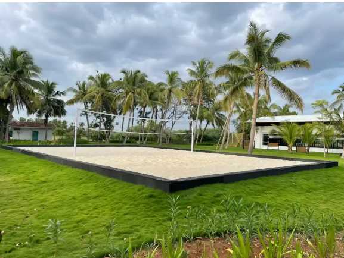

Alapakkam is a Village in Kaveripakkam Block in Vellore District of Tamil Nadu State, India. It is located 47 KM towards East from District head quarters Vellore. 14 KM from Kaveripakkam. 95 KM from State capital Chennai Alapakkam Pin code is 632508 and postal head office is Kaveripak . Ocheri ( 2 KM ) , Eralacheri ( 3 KM ) , Uthirampattu ( 3 KM ) , Thuraiperumbakkam ( 3 KM ) , Peruvalayam ( 4 KM ) are the nearby Villages to Alapakkam. Alapakkam is surrounded by Nemili Block towards East , Walajapet Block towards west , Arcot Block towards west , Vembakkam Block towards South . Arcot , Kanchipuram , Sholingur , Arakkonam are the near by Cities to Alapakkam.